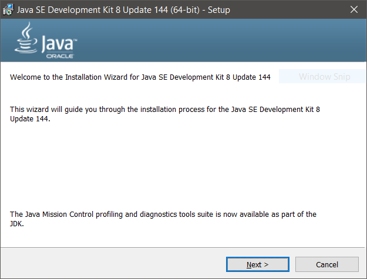
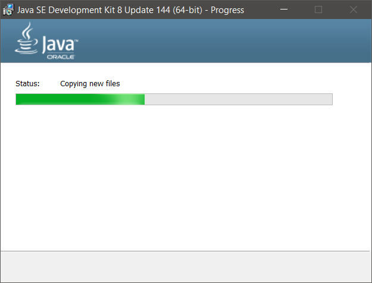
 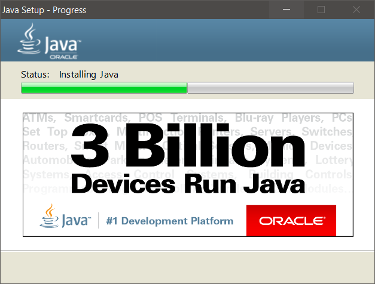
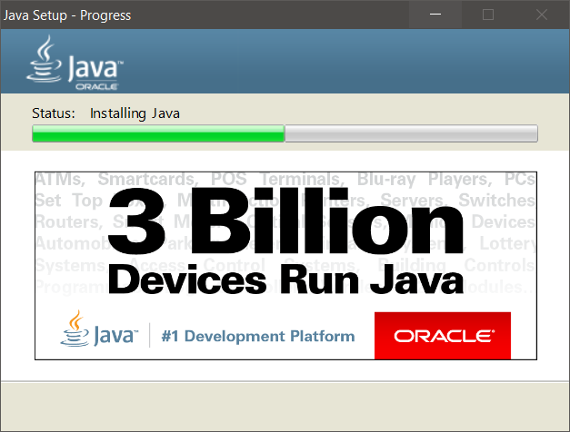

In this guide, we'll be comprehensively going over how to install Java and an editor (multiple options shown).
Java is a high-level compiled, object-oriented (OOP) language. It's very popular in the field of software development, and is a commonly used language in applications ranging from games to business tools. For a beginner, Java may be intimidating to deal with. However, with time and use, it quickly becomes natural and perhaps a favourite language as well, once its merits are realized.
As stated above, Java is a
compiled language. This is very different from Python, which is an
interpreted language.
Interpreted means that a program on your computer goes through your code
line-by-line and executes each on the computer. It's a friendlier type
of language, evident by the existence of Python Shell and IDLE, where you
can both run code line by line (shell) and save programs (IDLE).
However,
compiled means that
at startup, all the code is compressed into a readable format when you
hit "run." Then, the code is all executed "at once," resulting in very fast
programs. However, because of its compiled nature, there is no Java Shell
(until
Java 9, that is). Java doesn't come with an IDLE either; it only has
the libraries and the compiler when installed. This makes installing and
running Java programs much more unintuitive for beginners coming from Python.
Installing Java is very different from installing Python. Sure, you can use
repl.it or some other online editor to write your code and avoid the
hassles, but installing Java on your computer is certain to get you the best
programming environment. With ICS4U approaching soon, it's imperative that
we all get in some good Java XP before we enter, as Gr 12 CS is much more
difficult than Gr 11, and best if not BSed :).
*cough*
With that out, I think it's safe to say that it's in all of your best interests
to give Java at least a quick whirl before the school year.
This guide is intended for
inexperienced users who aren't sure how to configure Java correctly and
would like some assistance. If you have more than rudimentary knowledge on
how to install tools for a language and configure an editor, this guide will
likely bore you.
While this guide uses Windows 10 to demonstrate the procedure, a user of
any OS can follow along and perform the same steps with minor modifications.
Installing Java is really just installing the libraries and the compiler. These things are put into a package called a JDK, or Java Development Kit.
A. Go to the Java JDK download page and select a JDK for your computerIn the first link selection article, click "Accept License Agreement" and click the link that corresponds with your system (Windows x86 and Windows x64)*.
| 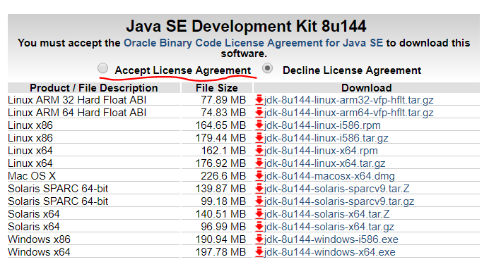 |
This step is simple enough. Just run the installer and say OK to all the settings. If you are confident and want to tamper with a few install settings, do so at your own peril. Remember the directory you save Java to.
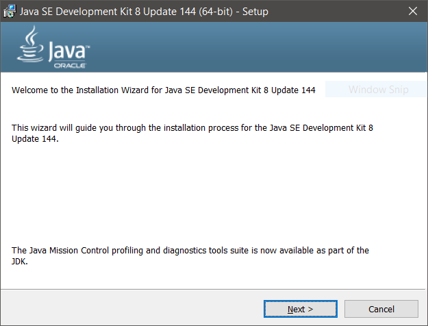
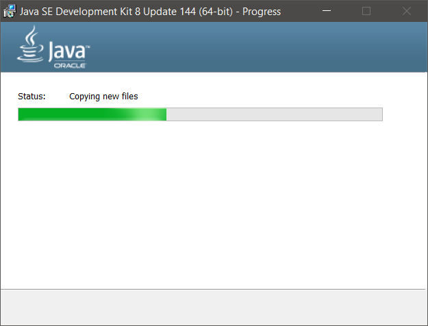
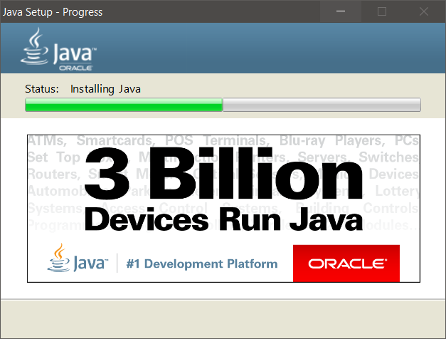
With that, Java is now on your system! It's still unusable (for normies) because we don't have an editor (smh normies), but it's now on your computer.
JCreator is a light
IDE, which stands for
Integrated
Development
Environment. Because Java doesn't have an IDLE or a shell like Python
does when installed, we will use JCreator when developing applications (or
normal programs, for normies).
JCreator cannot be downloaded from
their site at the moment cause it's broken (idk). HAVE NO FEAR THO, CAUSE
THE MAN HENRY TU NAVIGATED THR DARK DEPTHS OF THE INTERNET FOR US ALL TO
GET A CLEAN, NON-SKETCHY DOWNLOAD.
Click here to download the installer and setup executable.
The installation of JCreator is as simple as the installation of Java. Verfiy everything as usual and follow the cues in the images shown.

 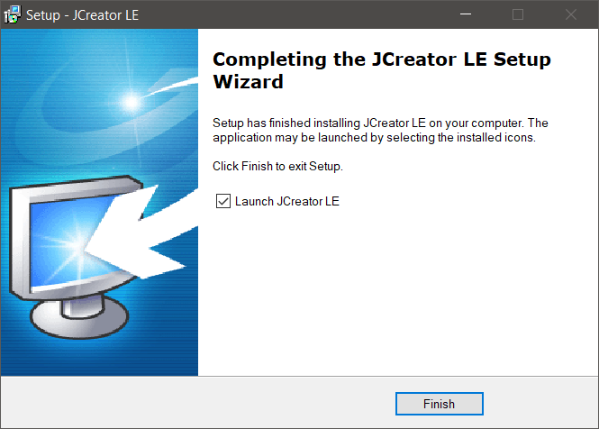
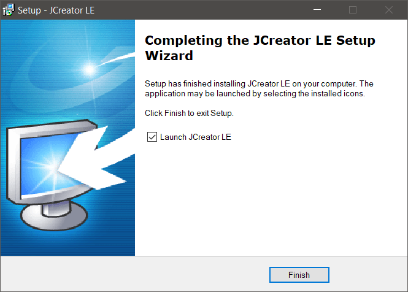
JCreator should boot immediately after finishing the installation. On boot, it will ask for more configurations relating to the way you want Java to work in the editor. Follow any cues in the images.
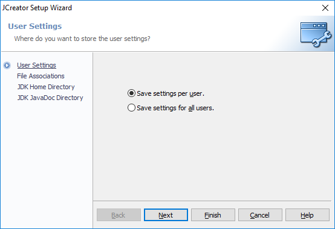
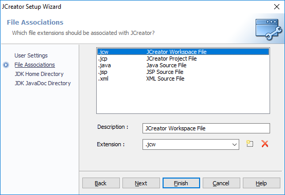
 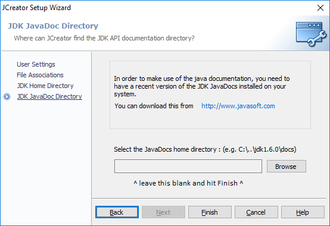
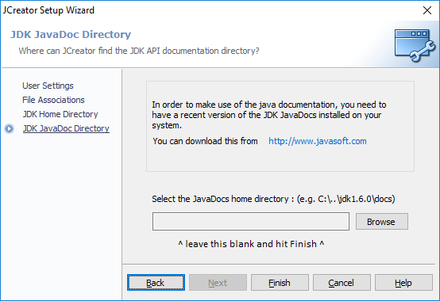
Making a Java file isn't as simple as Python. When you make a Java file, you actually need to make a project, which contains packages and source files to run your Java code. It's complicated to explain, but thankfully you don't need to worry about it for the most part. Just follow the steps shown below.
Once the window opens, disable and/or close the tips window that pops up (not important)
and navigate to:
File >> New >> Project...
Additionally, you can just hit
Ctrl + Shift + N to open a new project.

When you finish making your project, your should have a new editor open, with a template
waiting for you :). You can study the code for a bit, but you're going to
want to run it.
It's much easier than you think. Just
click the Run button at the top of the window and see the code run. Additionally,
you can just hit
F5. The output is at the bottom of the editor, in the General Output
window.
By the end of this tutorial, you install Java and are able to run Java code in an editor. This is the part where you go and do some more work in Java to prepare for next year. Make this CS year great. Take some courses online, watch some quick videos, and above all else, write your own code, develop your own style and solve some problems.
Embed from www.javarepl.com. Copyright (c) Albert Latacz and contributors under Apache 2.0